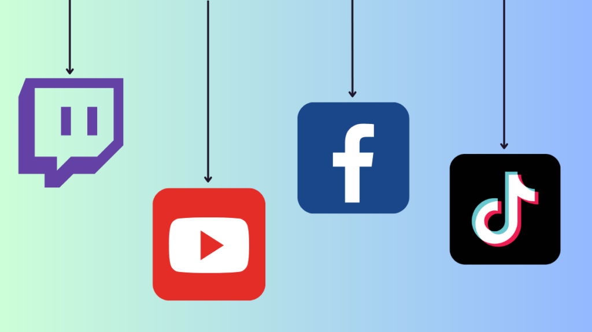

What is Livestreaming?
Streaming is an example of multimedia file like audio and video that are instantly played without downloading it first. Its media content, recorded or live, can be considered a streamed content as long as it can be played on any device via the internet even if you do not download it. It works through a continuous transmission of the media content from a server to the client.
